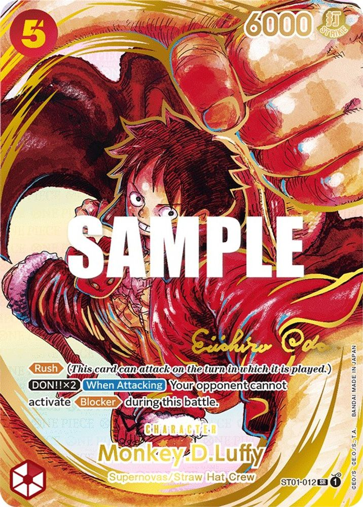

Card Prices · OP-05
Monkey D. Luffy 012 Alternate Art Gold Stamped Signature ST01-012 · SR

Monkey D. Luffy 012 Alternate Art Gold Stamped Signature is the #2 chase card in OP-05 Awakening of the New Era. A single raw copy is currently worth about 30x a sealed OP-05 box ($163) — the kind of hit that drives the whole box market. Its 90% gem rate means clean copies grade PSA 10 often, which keeps the graded premium over raw in check.
Raw vs PSA 10: is grading worth it here?
A PSA 10 currently carries a premium of about $4,889 over raw (2.0x). With an 90% gem rate, clean copies convert to PSA 10 often, so the math can work if the card is truly near-mint.
| Grade | Population | Share |
|---|---|---|
| PSA 10 | 5,110 | 90% |
| PSA 9 | 471 | 8% |
| PSA 8 or lower | 90 | 2% |
PSA population report for this exact variant. Population only grows — every new PSA 10 adds supply pressure on the graded price.
Verify the variant before you buy
ST01-012 exists in multiple printings, and they do not trade at the same price. This page tracks the Monkey D. Luffy 012 Alternate Art Gold Stamped Signature printing specifically. When comparing a listing: match the artwork and finish to the image above, check the card number in the corner, and for graded copies read the PSA label variant line. Our card price guide covers variant matching in detail, and the PSA 10 vs NM guide explains when grading is worth it.
FAQ
How much is Monkey D. Luffy 012 Alternate Art Gold Stamped Signature (ST01-012) worth?
As of 2026-07-18, the raw Japanese near-mint copy runs about ¥798,000 ($4,911) at Japanese retail, and PSA 10 copies are listed near $9,800. Prices move with the market; the figures on this page update with our data refreshes.
How rare is a PSA 10 of this card?
PSA has graded 5,671 copies of this exact variant, of which 5,110 earned PSA 10 — a 90% gem rate.
Which exact printing is this price for?
This page tracks the "Monkey D. Luffy 012 Alternate Art Gold Stamped Signature" printing only. Other printings of ST01-012 trade at very different prices, so match the artwork and finish exactly before comparing a listing to these numbers.